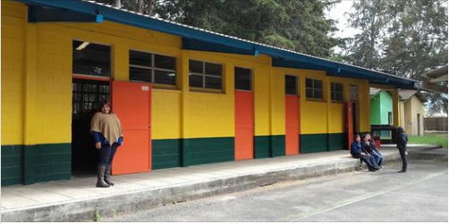
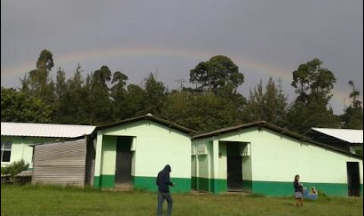
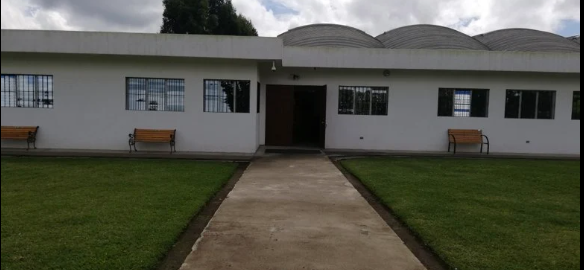
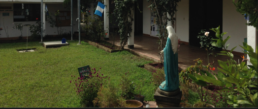
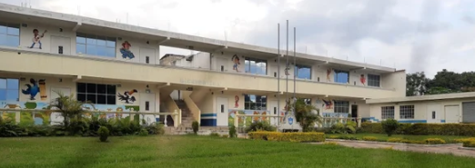

Mi nombre es Ana Leticia Yool Hernandez tengo 17 años de edad, Naci en Chimaltenango
el 10 de Diciembre del 2004, Desde el dia de mi nacimiento vivo en chimaltenango,a los
6 años comence a estudiar preparatoria en la Escuela Oficial Rural Mixta de parvulos
Centro America en Chimaltenango

Luego ingrese a estudiar en la Escuela Oficial Rural Mixta de aplicacion Centro America J.M.
La Alameda Chimaltenango, donde estudie de 1ro Primaria hasta 6to Primaria en donde pase
con exito todos mis grados asi mismo conoci a muchas personas y amigos, como tambien en
en el trascurso de esos años, desperte mi pasion por el futbol el cual es mi deporte faborito
por lo cual fiu capitana del equipo de futbol de Femenino por 4 años

En el 2018 ingrese a estudiar a el Colegio Bilingue En Computacion "San Bernabe" en parramos
en el cual estube un bimestre del siclo escolar y luego me retire por motivos personales

En el 2018 me traslade a estudiar en el Centro Educativo Monte Cristo, en el cual curse mi
primero basico y segundo basico con exito, asi mismo estube e el quipo femenino de futbol

En el 2022 ingrese a estudiar en el Colegio Cristiano Catolico Juan Pablo II en Buena Vista
en donde desperte mi curiosidad por la tecnologia y Programacion de paginas Web
tambien me tube que acoplar a resevir clases virtuales por el Covid 19, asi mismo curse mi
Tercero basico con exito

En el 2021 ingrese al Liceo Integral Cientifico En Computacion I. C. C. donde curse mi primer año
de carrera y actualmente estoy cursando el grado de 5to Bahillerato Industrial y Perito en
Computacion con orientacion en Informatica.